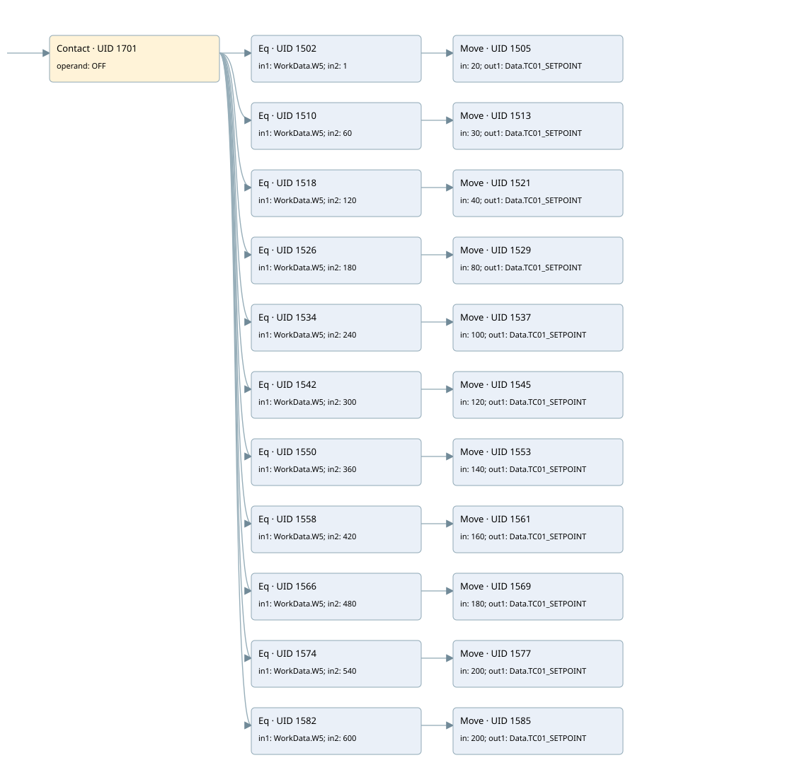

dryout warm first ramp
burner control · 검색 색인 순서 22 · 원본 내부 NID 추정 21
백업 PLF 원본의 2706100 바이트 위치에서 복원한 XML. 검색 문서 1875의 객체 키 16102200f510000000000000와 연결했다. 이름 해석 45/45개. 남은 RefId는 상수 또는 미해석 참조다.
연결 구조 다시 그리기
원본 Part/PCon/Wire를 이용한 연결도다. TIA 화면의 래더 배치 또는 실행 결과를 재현한 그림은 아니다. 핀 연결은 아래 표와 원본 XML을 기준으로 읽는다. 노드 위에 마우스를 두면 피연산자 이름을 볼 수 있다.

접점·코일·블록과 피연산자
| Part UID | Gate | Negated 핀 | 연결 피연산자 |
|---|---|---|---|
| 1701 | Contact | operand = OFF | |
| 1502 | Eq | in1 = WorkData.W5; in2 = 1 | |
| 1505 | Move | in = 20; out1 = Data.TC01_SETPOINT | |
| 1510 | Eq | in1 = WorkData.W5; in2 = 60 | |
| 1513 | Move | in = 30; out1 = Data.TC01_SETPOINT | |
| 1518 | Eq | in1 = WorkData.W5; in2 = 120 | |
| 1521 | Move | in = 40; out1 = Data.TC01_SETPOINT | |
| 1526 | Eq | in1 = WorkData.W5; in2 = 180 | |
| 1529 | Move | in = 80; out1 = Data.TC01_SETPOINT | |
| 1534 | Eq | in1 = WorkData.W5; in2 = 240 | |
| 1537 | Move | in = 100; out1 = Data.TC01_SETPOINT | |
| 1542 | Eq | in1 = WorkData.W5; in2 = 300 | |
| 1545 | Move | in = 120; out1 = Data.TC01_SETPOINT | |
| 1550 | Eq | in1 = WorkData.W5; in2 = 360 | |
| 1553 | Move | in = 140; out1 = Data.TC01_SETPOINT | |
| 1558 | Eq | in1 = WorkData.W5; in2 = 420 | |
| 1561 | Move | in = 160; out1 = Data.TC01_SETPOINT | |
| 1566 | Eq | in1 = WorkData.W5; in2 = 480 | |
| 1569 | Move | in = 180; out1 = Data.TC01_SETPOINT | |
| 1574 | Eq | in1 = WorkData.W5; in2 = 540 | |
| 1577 | Move | in = 200; out1 = Data.TC01_SETPOINT | |
| 1582 | Eq | in1 = WorkData.W5; in2 = 600 | |
| 1585 | Move | in = 200; out1 = Data.TC01_SETPOINT |
접점 경로를 펼친 조건식
Contact·O/A·비교기의 원본 연결을 읽기 쉽게 펼친 보조 해석이다. POWER는 전원 레일 시작을 뜻한다. 호출 블록·에지·타이머의 내부 동작과 다중 쓰기 순서는 이 표로 실행 검증하지 않았다. 미해석 핀과 RefId는 원문 연결표에서 확인한다.
| UID | 동작 | 대상 | 원본 접점 경로 | 내용 |
|---|---|---|---|---|
| 1505 | Move | Data.TC01_SETPOINT | (OFF AND [WorkData.W5 = 1]) | Move 입력 20 |
| 1513 | Move | Data.TC01_SETPOINT | (OFF AND [WorkData.W5 = 60]) | Move 입력 30 |
| 1521 | Move | Data.TC01_SETPOINT | (OFF AND [WorkData.W5 = 120]) | Move 입력 40 |
| 1529 | Move | Data.TC01_SETPOINT | (OFF AND [WorkData.W5 = 180]) | Move 입력 80 |
| 1537 | Move | Data.TC01_SETPOINT | (OFF AND [WorkData.W5 = 240]) | Move 입력 100 |
| 1545 | Move | Data.TC01_SETPOINT | (OFF AND [WorkData.W5 = 300]) | Move 입력 120 |
| 1553 | Move | Data.TC01_SETPOINT | (OFF AND [WorkData.W5 = 360]) | Move 입력 140 |
| 1561 | Move | Data.TC01_SETPOINT | (OFF AND [WorkData.W5 = 420]) | Move 입력 160 |
| 1569 | Move | Data.TC01_SETPOINT | (OFF AND [WorkData.W5 = 480]) | Move 입력 180 |
| 1577 | Move | Data.TC01_SETPOINT | (OFF AND [WorkData.W5 = 540]) | Move 입력 200 |
| 1585 | Move | Data.TC01_SETPOINT | (OFF AND [WorkData.W5 = 600]) | Move 입력 200 |
원본 배선 연결
| Wire UID | 동일 Wire 연결 끝점 |
|---|---|
| 1703 | Powerrail {} ↔ Part 1701.in |
| 1633 | ORef 1588 (OFF) ↔ Part 1701.operand |
| 1702 | Part 1701.out ↔ Part 1502.pre ↔ Part 1510.pre ↔ Part 1518.pre ↔ Part 1526.pre ↔ Part 1534.pre ↔ Part 1542.pre ↔ Part 1550.pre ↔ Part 1558.pre ↔ Part 1566.pre ↔ Part 1574.pre ↔ Part 1582.pre |
| 1634 | ORef 1589 (WorkData.W5) ↔ Part 1502.in1 |
| 1635 | ORef 1590 (1) ↔ Part 1502.in2 |
| 1636 | Part 1502.out ↔ Part 1505.en |
| 1638 | ORef 1591 (20) ↔ Part 1505.in |
| 1639 | Part 1505.out1 ↔ ORef 1592 (Data.TC01_SETPOINT) |
| 1640 | ORef 1593 (WorkData.W5) ↔ Part 1510.in1 |
| 1641 | ORef 1594 (60) ↔ Part 1510.in2 |
| 1642 | Part 1510.out ↔ Part 1513.en |
| 1644 | ORef 1595 (30) ↔ Part 1513.in |
| 1645 | Part 1513.out1 ↔ ORef 1596 (Data.TC01_SETPOINT) |
| 1646 | ORef 1597 (WorkData.W5) ↔ Part 1518.in1 |
| 1647 | ORef 1598 (120) ↔ Part 1518.in2 |
| 1648 | Part 1518.out ↔ Part 1521.en |
| 1650 | ORef 1599 (40) ↔ Part 1521.in |
| 1651 | Part 1521.out1 ↔ ORef 1600 (Data.TC01_SETPOINT) |
| 1652 | ORef 1601 (WorkData.W5) ↔ Part 1526.in1 |
| 1653 | ORef 1602 (180) ↔ Part 1526.in2 |
| 1654 | Part 1526.out ↔ Part 1529.en |
| 1656 | ORef 1603 (80) ↔ Part 1529.in |
| 1657 | Part 1529.out1 ↔ ORef 1604 (Data.TC01_SETPOINT) |
| 1658 | ORef 1605 (WorkData.W5) ↔ Part 1534.in1 |
| 1659 | ORef 1606 (240) ↔ Part 1534.in2 |
| 1660 | Part 1534.out ↔ Part 1537.en |
| 1662 | ORef 1607 (100) ↔ Part 1537.in |
| 1663 | Part 1537.out1 ↔ ORef 1608 (Data.TC01_SETPOINT) |
| 1664 | ORef 1609 (WorkData.W5) ↔ Part 1542.in1 |
| 1665 | ORef 1610 (300) ↔ Part 1542.in2 |
| 1666 | Part 1542.out ↔ Part 1545.en |
| 1668 | ORef 1611 (120) ↔ Part 1545.in |
| 1669 | Part 1545.out1 ↔ ORef 1612 (Data.TC01_SETPOINT) |
| 1670 | ORef 1613 (WorkData.W5) ↔ Part 1550.in1 |
| 1671 | ORef 1614 (360) ↔ Part 1550.in2 |
| 1672 | Part 1550.out ↔ Part 1553.en |
| 1674 | ORef 1615 (140) ↔ Part 1553.in |
| 1675 | Part 1553.out1 ↔ ORef 1616 (Data.TC01_SETPOINT) |
| 1676 | ORef 1617 (WorkData.W5) ↔ Part 1558.in1 |
| 1677 | ORef 1618 (420) ↔ Part 1558.in2 |
| 1678 | Part 1558.out ↔ Part 1561.en |
| 1680 | ORef 1619 (160) ↔ Part 1561.in |
| 1681 | Part 1561.out1 ↔ ORef 1620 (Data.TC01_SETPOINT) |
| 1682 | ORef 1621 (WorkData.W5) ↔ Part 1566.in1 |
| 1683 | ORef 1622 (480) ↔ Part 1566.in2 |
| 1684 | Part 1566.out ↔ Part 1569.en |
| 1686 | ORef 1623 (180) ↔ Part 1569.in |
| 1687 | Part 1569.out1 ↔ ORef 1624 (Data.TC01_SETPOINT) |
| 1688 | ORef 1625 (WorkData.W5) ↔ Part 1574.in1 |
| 1689 | ORef 1626 (540) ↔ Part 1574.in2 |
| 1690 | Part 1574.out ↔ Part 1577.en |
| 1692 | ORef 1627 (200) ↔ Part 1577.in |
| 1693 | Part 1577.out1 ↔ ORef 1628 (Data.TC01_SETPOINT) |
| 1694 | ORef 1629 (WorkData.W5) ↔ Part 1582.in1 |
| 1695 | ORef 1630 (600) ↔ Part 1582.in2 |
| 1696 | Part 1582.out ↔ Part 1585.en |
| 1698 | ORef 1631 (200) ↔ Part 1585.in |
| 1699 | Part 1585.out1 ↔ ORef 1632 (Data.TC01_SETPOINT) |
식별자 해석 근거 45개
| ORef UID | RefId | 이름 | IdentXmlPart 파일 | 해석 방법 |
|---|---|---|---|---|
| 1588 | 80 | OFF | 0582-IdentXmlPart.xml | UID/RID + search-text + NID agreement |
| 1589 | 48 | WorkData.W5 | 0585-IdentXmlPart.xml | UID/RID + search-text + NID agreement |
| 1590 | 49 | 1 | 0586-IdentXmlPart.xml | literal candidate: UID/RID/NID + nearby named declarations + search-text agreement |
| 1591 | 60 | 20 | 0586-IdentXmlPart.xml | literal candidate: UID/RID/NID + nearby named declarations + search-text agreement |
| 1592 | 59 | Data.TC01_SETPOINT | 0585-IdentXmlPart.xml | UID/RID + search-text + NID agreement |
| 1593 | 48 | WorkData.W5 | 0585-IdentXmlPart.xml | UID/RID + search-text + NID agreement |
| 1594 | 130 | 60 | 0586-IdentXmlPart.xml | literal candidate: UID/RID/NID + nearby named declarations + search-text agreement |
| 1595 | 82 | 30 | 0586-IdentXmlPart.xml | literal candidate: UID/RID/NID + nearby named declarations + search-text agreement |
| 1596 | 59 | Data.TC01_SETPOINT | 0585-IdentXmlPart.xml | UID/RID + search-text + NID agreement |
| 1597 | 48 | WorkData.W5 | 0585-IdentXmlPart.xml | UID/RID + search-text + NID agreement |
| 1598 | 167 | 120 | 0586-IdentXmlPart.xml | literal candidate: UID/RID/NID + nearby named declarations + search-text agreement |
| 1599 | 169 | 40 | 0586-IdentXmlPart.xml | literal candidate: UID/RID/NID + nearby named declarations + search-text agreement |
| 1600 | 59 | Data.TC01_SETPOINT | 0585-IdentXmlPart.xml | UID/RID + search-text + NID agreement |
| 1601 | 48 | WorkData.W5 | 0585-IdentXmlPart.xml | UID/RID + search-text + NID agreement |
| 1602 | 170 | 180 | 0586-IdentXmlPart.xml | literal candidate: UID/RID/NID + nearby named declarations + search-text agreement |
| 1603 | 172 | 80 | 0586-IdentXmlPart.xml | literal candidate: UID/RID/NID + nearby named declarations + search-text agreement |
| 1604 | 59 | Data.TC01_SETPOINT | 0585-IdentXmlPart.xml | UID/RID + search-text + NID agreement |
| 1605 | 48 | WorkData.W5 | 0585-IdentXmlPart.xml | UID/RID + search-text + NID agreement |
| 1606 | 173 | 240 | 0586-IdentXmlPart.xml | literal candidate: UID/RID/NID + nearby named declarations + search-text agreement |
| 1607 | 154 | 100 | 0586-IdentXmlPart.xml | literal candidate: UID/RID/NID + nearby named declarations + search-text agreement |
| 1608 | 59 | Data.TC01_SETPOINT | 0585-IdentXmlPart.xml | UID/RID + search-text + NID agreement |
| 1609 | 48 | WorkData.W5 | 0585-IdentXmlPart.xml | UID/RID + search-text + NID agreement |
| 1610 | 175 | 300 | 0586-IdentXmlPart.xml | literal candidate: UID/RID/NID + nearby named declarations + search-text agreement |
| 1611 | 167 | 120 | 0586-IdentXmlPart.xml | literal candidate: UID/RID/NID + nearby named declarations + search-text agreement |
| 1612 | 59 | Data.TC01_SETPOINT | 0585-IdentXmlPart.xml | UID/RID + search-text + NID agreement |
| 1613 | 48 | WorkData.W5 | 0585-IdentXmlPart.xml | UID/RID + search-text + NID agreement |
| 1614 | 177 | 360 | 0586-IdentXmlPart.xml | literal candidate: UID/RID/NID + nearby named declarations + search-text agreement |
| 1615 | 179 | 140 | 0586-IdentXmlPart.xml | literal candidate: UID/RID/NID + nearby named declarations + search-text agreement |
| 1616 | 59 | Data.TC01_SETPOINT | 0585-IdentXmlPart.xml | UID/RID + search-text + NID agreement |
| 1617 | 48 | WorkData.W5 | 0585-IdentXmlPart.xml | UID/RID + search-text + NID agreement |
| 1618 | 180 | 420 | 0586-IdentXmlPart.xml | literal candidate: UID/RID/NID + nearby named declarations + search-text agreement |
| 1619 | 182 | 160 | 0586-IdentXmlPart.xml | literal candidate: UID/RID/NID + nearby named declarations + search-text agreement |
| 1620 | 59 | Data.TC01_SETPOINT | 0585-IdentXmlPart.xml | UID/RID + search-text + NID agreement |
| 1621 | 48 | WorkData.W5 | 0585-IdentXmlPart.xml | UID/RID + search-text + NID agreement |
| 1622 | 183 | 480 | 0586-IdentXmlPart.xml | literal candidate: UID/RID/NID + nearby named declarations + search-text agreement |
| 1623 | 170 | 180 | 0586-IdentXmlPart.xml | literal candidate: UID/RID/NID + nearby named declarations + search-text agreement |
| 1624 | 59 | Data.TC01_SETPOINT | 0585-IdentXmlPart.xml | UID/RID + search-text + NID agreement |
| 1625 | 48 | WorkData.W5 | 0585-IdentXmlPart.xml | UID/RID + search-text + NID agreement |
| 1626 | 185 | 540 | 0586-IdentXmlPart.xml | literal candidate: UID/RID/NID + nearby named declarations + search-text agreement |
| 1627 | 187 | 200 | 0586-IdentXmlPart.xml | literal candidate: UID/RID/NID + nearby named declarations + search-text agreement |
| 1628 | 59 | Data.TC01_SETPOINT | 0585-IdentXmlPart.xml | UID/RID + search-text + NID agreement |
| 1629 | 48 | WorkData.W5 | 0585-IdentXmlPart.xml | UID/RID + search-text + NID agreement |
| 1630 | 188 | 600 | 0586-IdentXmlPart.xml | literal candidate: UID/RID/NID + nearby named declarations + search-text agreement |
| 1631 | 187 | 200 | 0586-IdentXmlPart.xml | literal candidate: UID/RID/NID + nearby named declarations + search-text agreement |
| 1632 | 59 | Data.TC01_SETPOINT | 0585-IdentXmlPart.xml | UID/RID + search-text + NID agreement |
검색 코드 보조 자료
참조 명칭을 찾기 위한 자료이며 실행 순서나 AND/OR 관계는 위 연결표로 확인한다.
"off" "workdata".w5 1 move 20 "workdata".w5 60 move 30 "data".tc01_setpoint "workdata".w5 120 move 40 "data".tc01_setpoint "workdata".w5 180 move 80 "data".tc01_setpoint "workdata".w5 240 move 100 "data".tc01_setpoint "workdata".w5 300 move 120 "data".tc01_setpoint "workdata".w5 360 move 140 "data".tc01_setpoint "workdata".w5 420 move 160 "data".tc01_setpoint "workdata".w5 480 move 180 "data".tc01_setpoint "workdata".w5 540 move 200 "data".tc01_setpoint "workdata".w5 600 move 200 "data".tc01_setpoint "data".tc01_setpoint